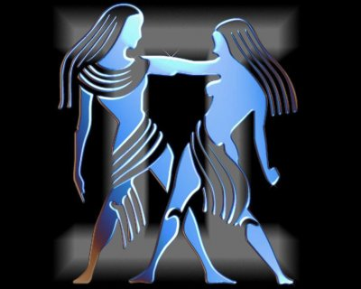

(21 Mayıs- 21 Haziran)
Bu diyet 3 günde 2 kilo vermelerini sağlayacak. Her gün 2,5 litre sıvı almaları gerekiyor
1.ÖĞÜN:Bir bardak muzlu süt.1 dilim kızarmış kepek ekmek. Arada 1 elma.
2.ÖĞÜN:2 dilim kepek ekmeğinden tavuk göğsüyle bol yeşillikli sandviç. Yanında bir bardak ayran. Arada 1 havuç.
3.ÖĞÜN:Az yağlı sebze yemeği ve 4 kaşık diyet yoğurt. Arada bir elma. 1 fincan yeşil çay.
1.ÖĞÜN:1 Dilim kepek ekmek, bir haşlanmış yumurta, bir dilim karpuz.
2.ÖĞÜN:1 Tane sosisli sandviç, arada 10 tane kiraz.
3.ÖĞÜN:1 kase sebze çorbası, 1 tane yeşil biber.arada 1 elma , bir fincan yeşil çay.
1.ÖĞÜN:1 Tane meyveli yoğurt, şekersiz çay ve kahve yanında 2 adet diyet bisküvi.
2.ÖĞÜN:1 Porsiyon sadece et olarak döner, yanında bol yeşil salata, arada 100gr Çilek. 1 fincan yeşil çay. Şekersiz kahve.
3.ÖĞÜN:1 porsiyon zeytinyağlı enginar, bol salata, 1 tane kivi yatarken bir fincan yeşil çay.